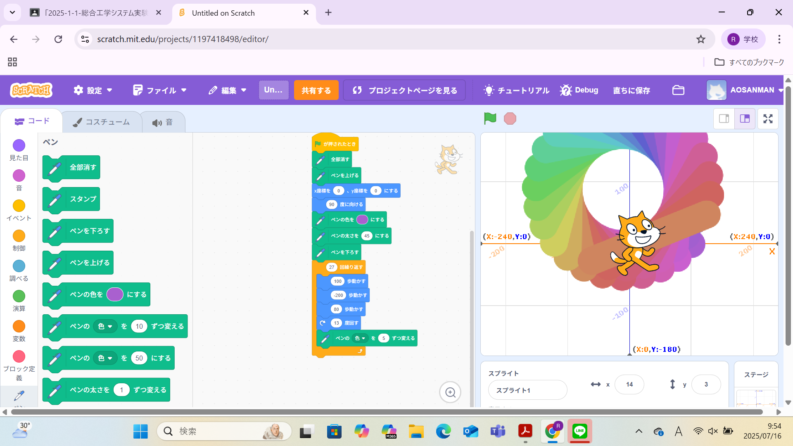
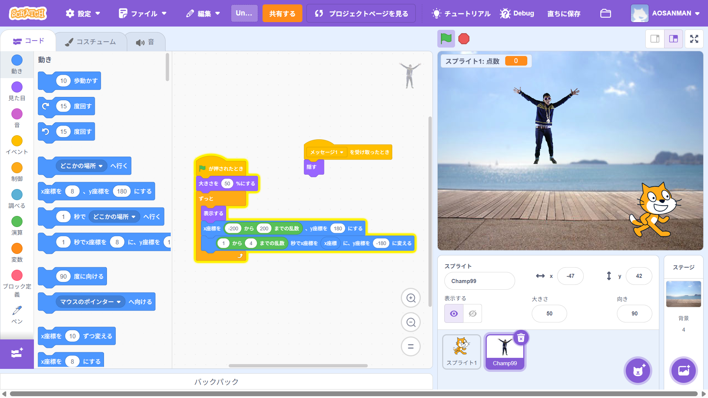

1週目のレポート ： 公大高専１年実習I-1
1a班11番 <あおい>
第1週目
1-1 サイエンスアート

1.内容
scratch拡張機能のペンを使用し、スプラウトを動かすことで円を描いた。ペンの太さやスプラウトの歩幅や方向、 これらをうまく動かすことで自由自在に円の大きさを変えることができる。
2.感想
今までscratchを使ったことがなかったため、どうやったらキャラが動くのかやどうやったら思うままに動かせるのかが分からなかった。 そのため、scratchに対しての理解を深めることができた。
1-2 ゲーム

1.内容
scratchを使って上から落ちてくるものをキャラクターがキャッチするゲームを製作した。座標を使うことによってキャラクターの位置が変わり、 乱数を使うことによって落ちてくる場所がランダムになる。
2.感想
今まで自分がやってきたスマホやテレビゲームなどは複雑なものしかなかったが、これらはすべてこのようなプログラムが含まれているので、 基礎の大切さが分かった。
1-3 ホームページ作成
私のホームページ
1.内容
自分の趣味や身分などの簡単な紹介をindex.htmlをもとに自分が作成したホームページに書き込んだ。
2.感想
今までホームページなどを書き込むときはそのまま書き込むものだと思い込んでいたが、
プログラミングのようなツールで書くものだと知って驚いた。
各ページへのリンク
1週目のレポート
2週目のレポート
3週目のレポート
私のホームページ